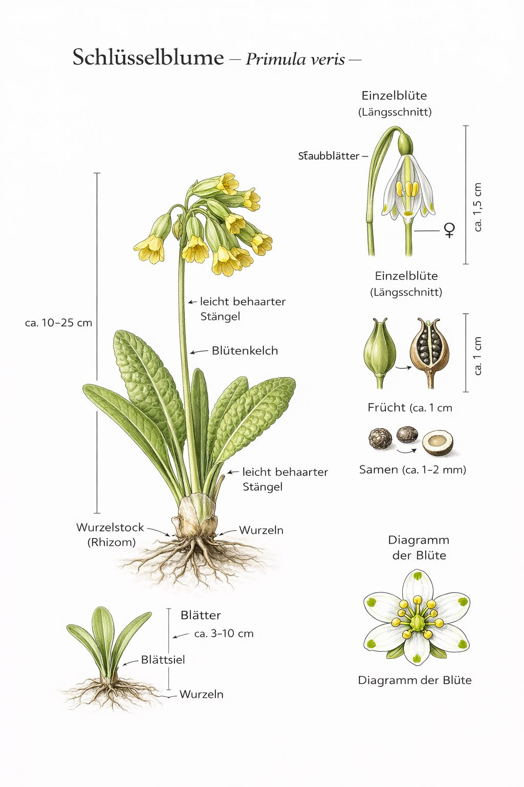

Nr. 11 · Frühblüher der Wiese
Schlüsselblume
Primula veris
Himmelsschlüssel, Frühlingsbote und Apothekerpflanze seit dem Mittelalter.


Himmelsschlüssel – eine Legende
Der Volksname ‚Himmelsschlüssel' hat eine schöne Legende: Als Petrus versehentlich seinen Schlüsselbund fallen liess, wuchs dort, wo er aufschlug, die Schlüsselblume. Im Englischen heisst sie ‚Cowslip' – Kuhfladen, weil sie früher oft auf gedüngten Kuhweiden wuchs. Der Namenunterschied zeigt, wie unterschiedlich Kulturen dieselbe Pflanze sehen.
Heterostylie – zwei Blütentypen
Die Schlüsselblume gibt es in zwei Formen: Langgriffler (Griffel ragt aus der Blüte) und Kurzgriffler (Griffel kurz, Staubbeutel sichtbar). Nur die Kreuzung zwischen beiden ergibt volle Samenernte. Dieser Mechanismus verhindert Inzucht und fördert genetische Vielfalt – eine Erfindung der Natur, die Charles Darwin faszinierte.
Wissenswertes & Merksätze
Zwei Blütentypen zeigen
Langgriffler und Kurzgriffler an einer Wiese – ein Demo-Objekt für Heterostylie, das Darwin selbst begeisterte.
Zeigerpflanze
Schlüsselblumen zeigen magere, kalkreiche Wiesen an – ein Lebensraum, der durch Düngung und Aufforstung europaweit bedroht ist.
Schutzstatus
In vielen Bundesländern besonders geschützt – Pflücken verboten. Bestände sind durch Lebensraumverlust stark zurückgegangen.